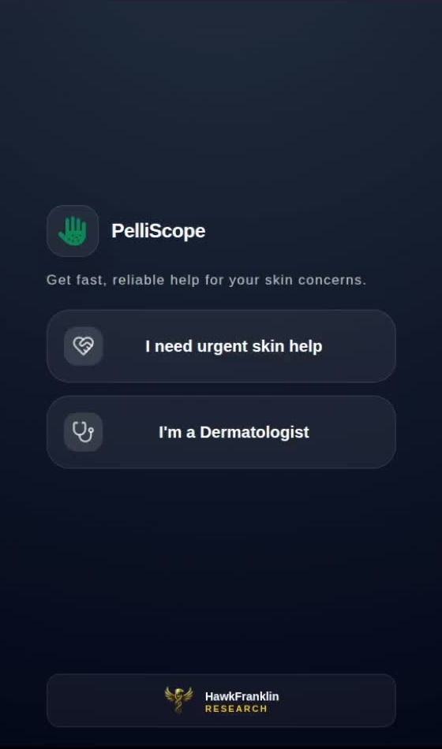
1
Role selection
The user chooses urgent skin help or dermatologist mode from the first screen.
 PelliScope Patient Visuals
PelliScope Patient Visuals
Patient-side screenshot catalogue
These are real workflow screenshots cropped for product catalogues: role selection, account creation, patient home, image upload, AI screening, clinician selection, and final case submission.
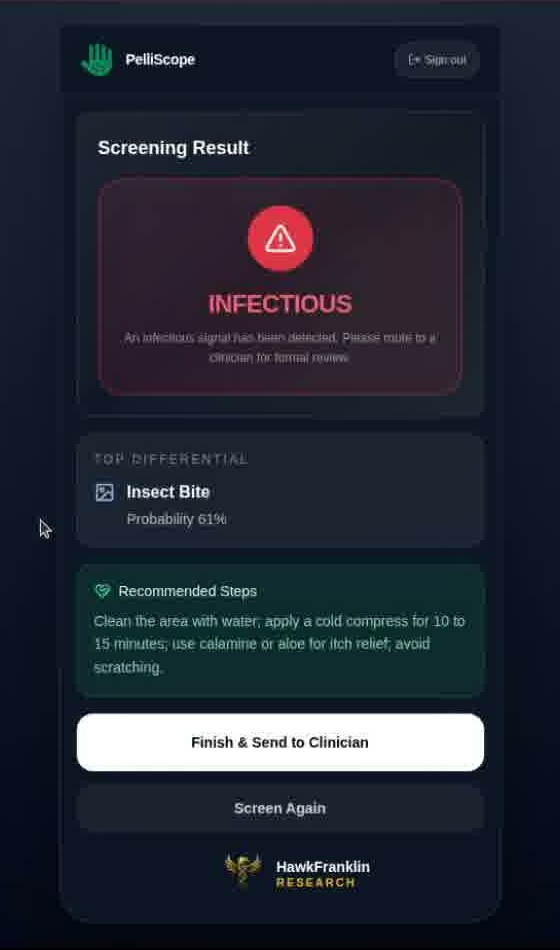
Step-by-step
Every image below is an actual captured screen from the patient workflow, cropped to remove Chrome and black recording borders so external catalog tools can scrape the product UI directly.

The user chooses urgent skin help or dermatologist mode from the first screen.
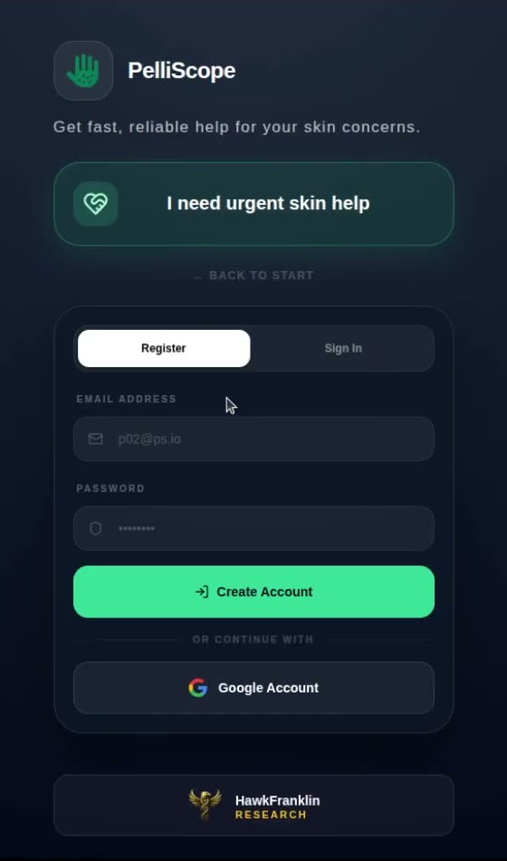
Registration starts with name, email, password, and Google sign-in option.
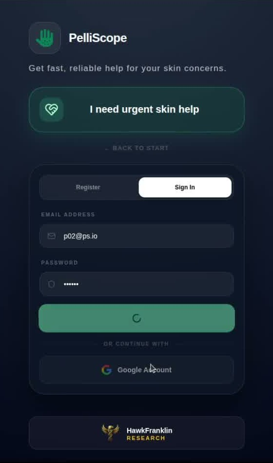
The same surface supports returning patient sign-in before the screening flow opens.
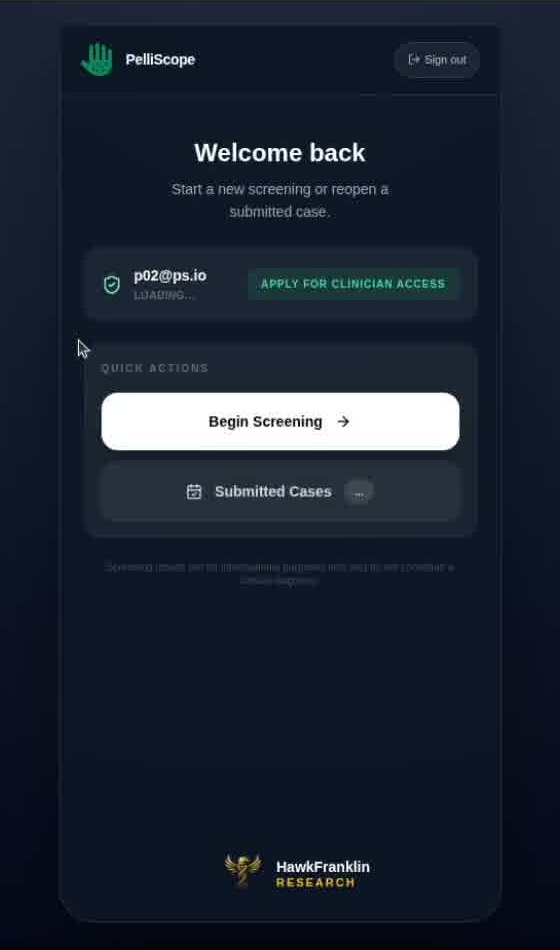
The patient can begin screening, reopen submitted cases, or apply for clinician access.
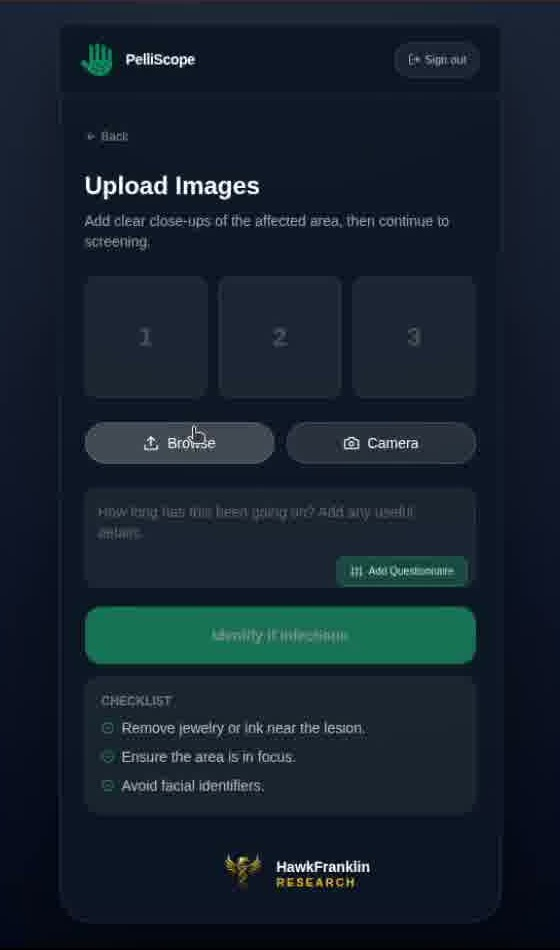
The upload screen asks for clear close-ups and lets the user browse or use camera capture.
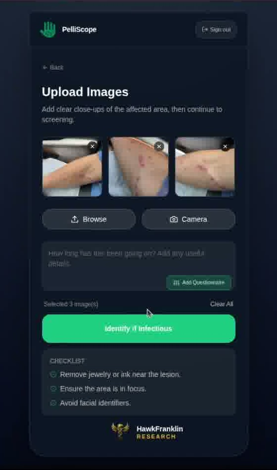
Selected photos appear inline before the infectious screening action is triggered.
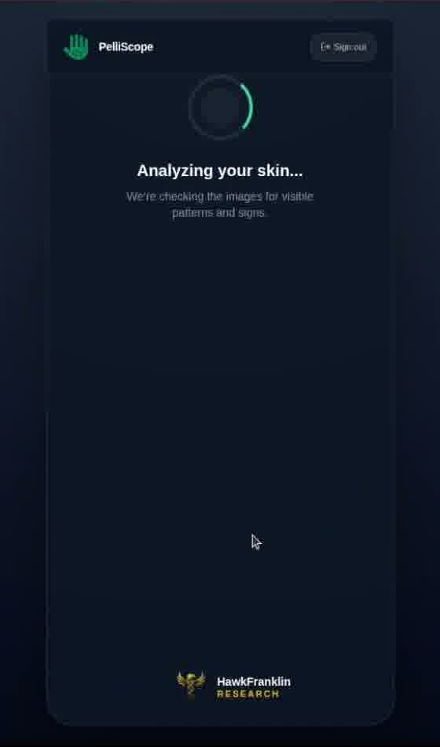
The processing state confirms that the image is being analyzed for visible patterns and signals.
The report shows infectious status, top differential, recommendation, and next action.
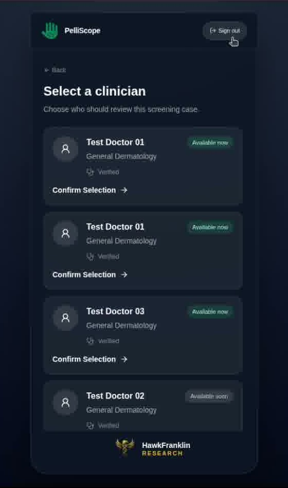
The patient chooses which clinician should receive the screening case for review.
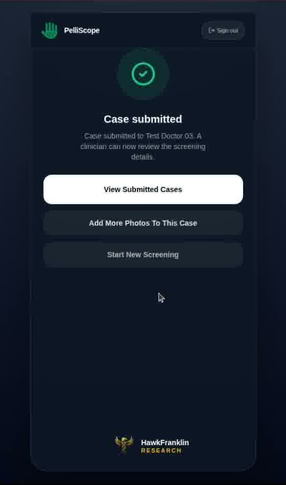
The final confirmation gives the patient options to view submitted cases or add photos.
Single image overview
This full overview sheet is included for tools that prefer one stitched screenshot asset instead of separate flow steps.
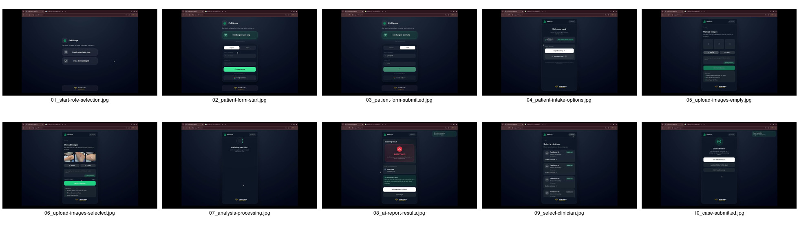